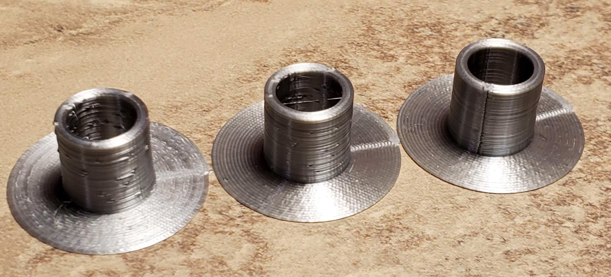

Hummm what's up here with this zitting? See Surface Pocking (Erratic Nozzle Travel). Maybe I'll reprint this again later to get a better print but, it's not the Sistine Chapel so let's move on...
I made a few attempts here and had significant difficulties with zitt-ing and ringing. Note the glued seam. This was a learning exercise for me and I was testing the strength of layer adhesion and getting an idea of what the breaking point was. Let's just say I found it.
First I focused on the zits and after trying to tweak a few settings related to retraction, I finally broke away and built a Test Cylinder in OpenSCAD as it was clear that I would need to test drive multiple setting combinations and I needed something quick to print and examine. Fooling with the retraction distance and speed, I managed to make the zitting worse but not much better. I also tried adjusting the temperature, combing, wipe distance, etc. Finally, and I don't know why I did't start with this, I re-leveled the bed which had a positive impact but, there were still visible surface anomalies. Upon closer inspection the zits went from protrusions to indentations. Perhaps this is just as good as it gets with a random seam? Ultimately my solution was to change the seam alignment from "Random" to "Back". Here are a few of the test cylinders with the last showing the vertical seam. In actuality for this part, I also selected "Sharpest Conner" for this part which results in hading the seam in the windows and other sharp connors on the way up. There are only a few parts for which the circumference is not broken by an edge in which to align/hide the seam.
The first is the current state. The second is a little better due to bed re-leveling). The third is with the seam in the back (piece rotated so it can be seen).
Here you can see the seam hidden in a window. The head is about to complete the layer...
The actual print came out like this. Not super and I'm not happy with it but, it will do for now.
Rotated by 180° and set the seam alignment to the back as there are large portions of the z profile which unlike the secondary haul are not broken by a conner so might as well align the seam directly centered on the underside for those cases and still hide it in the corers when possible. Also adjusted the infill to 8%.
All I did here was configure the seam to be on the backside/underside.
Here again I rotated the part by 180° so the seam would be on the backside/underside.
Here again I rotated the part by 180° so the seam would be on the backside/underside. I also added a support blocker on the inside as the support really isn't necessary. I suppose I could have adjusted the overhang tolerance but I wanted to play with the blocker.

Seam alignment to "Sharpest Corner" and no support. In the final layers at about 98%, the print head caught and partially dislodged the engine from the bed. Thankfully it did not cause a total failure and I was able to stabilize it with some safety tape applied as an angle bracket. So I regenerated with brim on the inside as well as the outside. Upon closer inspection, there was some unnecessary infill which looked to be the culprit so I removed that as well by disabling infill.
I am extremely happy with the quality of this print.
For the front cap, I blocked support in the middle as advised. The caps look uniform so I just printed the left ones twice.
For the back caps, rotated the part by 180° so the seam would be on the backside/underside and enabled "Outer Before Inner Walls" to see if that helps with the seaming.

Used "Outer Before Inner Walls" again and set the seam alignment to "Back" / "Sharpest Corner". The arms too look uniform so I just printed the left one twice.

I want with 20% infill.
The emblem inlay was a little tricky. First it was orientated standing up so I flipped it 90° and dropped it to the plate. However the initial slice looked like this: